Turn on Relevant Activity and each feed is assembled from that member’s timeline, connections, followed members, joined groups, subscribed forums and @mentions. No black-box algorithm deciding what they see — just their community.
Feed Filters
One feed, filtered your way
A reorderable filter bar lets members cut the feed to what they came for — mentions, connections, groups they follow. Eight views of one stream, in the order you choose.
Activity Topics
Activity topics that file every post
Topics turn one busy feed into browsable conversations. Define the list, decide who can post to each, and require a topic so nothing lands unlabeled — in groups too.
Activity Search
Activity search that resurfaces any post in seconds
Full-text search across every post and comment in the feed. That answer from three weeks ago resurfaces in seconds.
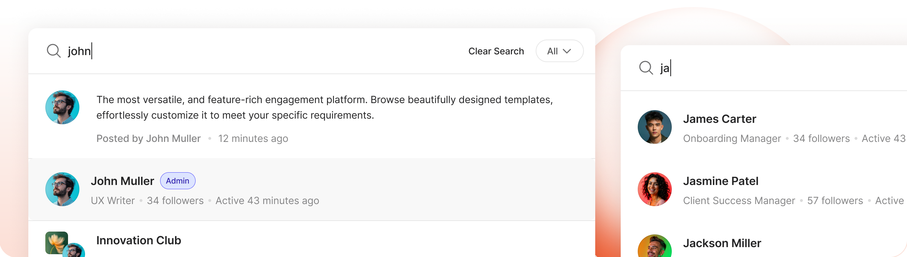
Activity Auto-Refresh
Activity feed that refreshes itself
A reorderable filter bar lets members cut the feed to what they came for — mentions, connections, groups they follow. Eight views of one stream, in the order you choose.
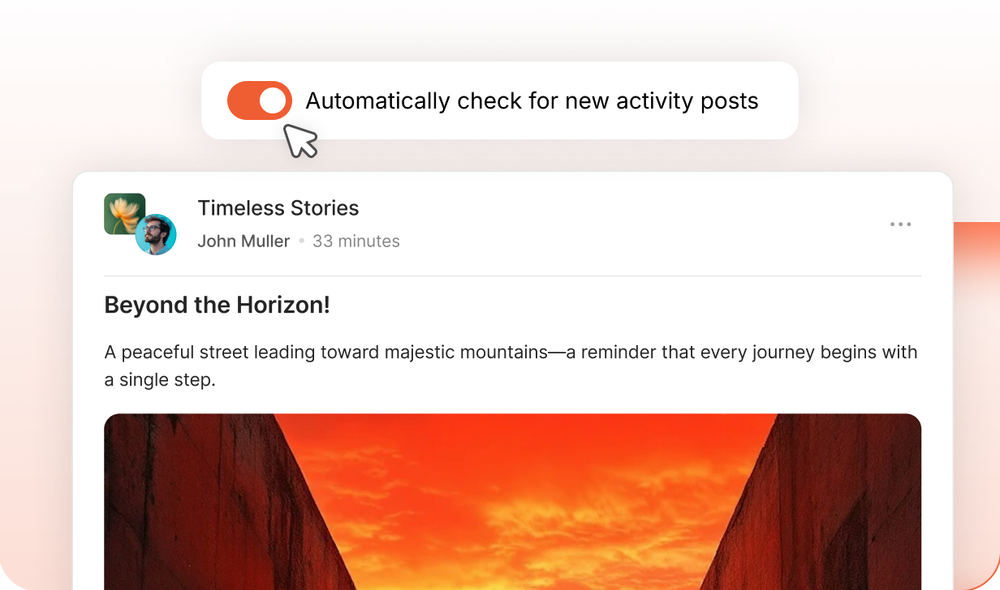
Activity Sharing
Share activity post to anywhere
Topics turn one busy feed into browsable conversations. Define the list, decide who can post to each, and require a topic so nothing lands unlabeled — in groups too.
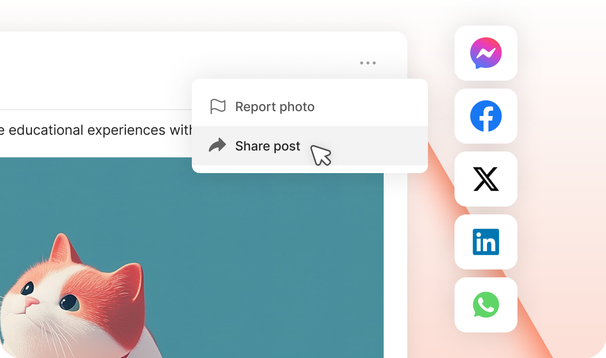
Build your community’s home on BuddyBoss
Build thriving communities, membership sites, and online learning platforms with BuddyBoss—the leading WordPress community platform.
Group owners and moderators write now and publish later. The "Scheduled posts" queue shows each post with its date — Edit post or Edit schedule any time before it goes live.
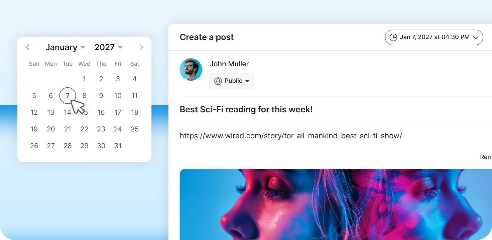
Pin Posts
Pinned posts stays on top
Group owners and moderators can pin posts — one admin switch. "Pin to feed" sits right in the post menu.
Polls
Polls the community answers right in the feed
Group owners and moderators drop a poll straight into the composer — live vote counts, with a closing date. Votes land where the conversation already is.
Post Feature Image
Cover images that turn updates into articles
Group owners and moderators can add a featured image to a post. The composer’s "Add Feature Image" dropzone takes a click or a drag-and-drop — the post lands looking editorial.
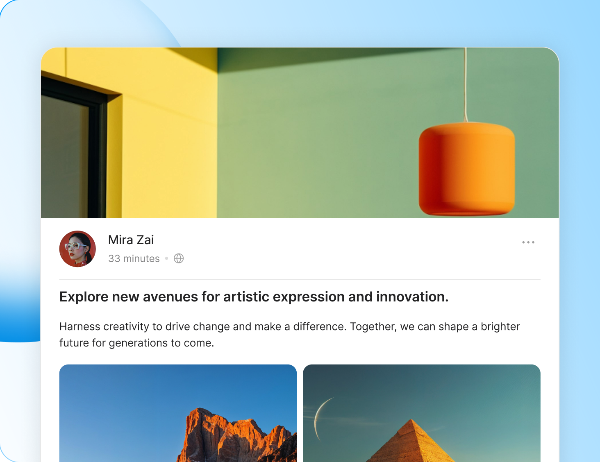
Edit Activity
Members fix a typo or reword a post right from its menu, inside the edit window you set — thirty minutes up to forever. The feed stays accurate without a moderator in the loop.
Close Comments
Authors and admins hit "Turn off commenting" right in the post menu. The conversation ends on purpose.
Post Title
The composer carries a "Title (optional)" field you can make mandatory. Required titles turn the whole feed editorial.
Build your community’s home on BuddyBoss
Build thriving communities, membership sites, and online learning platforms with BuddyBoss—the leading WordPress community platform.
The master switch for commenting on activity posts. Turn it on and every post becomes a conversation members join right in the feed.
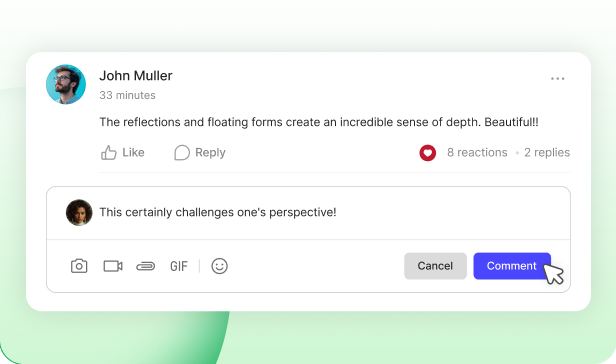
Edit Comments
Timed comment editing
Members fix a typo in their comment inside the window you set. Once it’s over, the record stands — no silent rewrites.
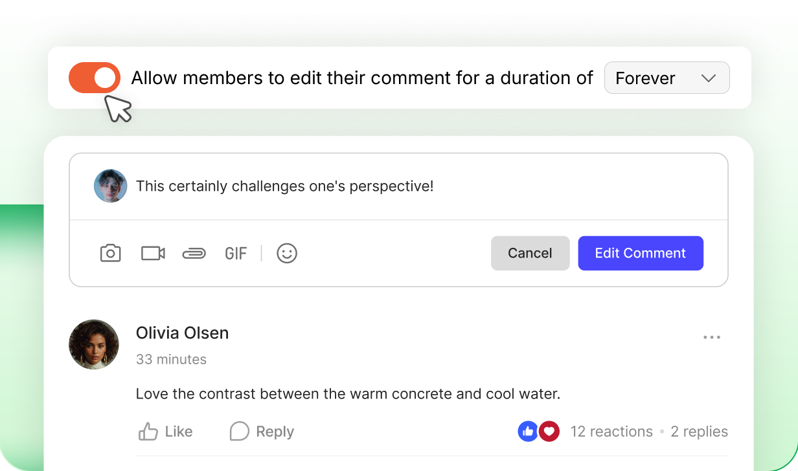
Comment Threading
Readable threaded comments
Conversations organize into threads at the depth you choose. Decide how many comments show per post, how many load at a time, and how long members can edit their replies.
Comment Visibility
Comments visible before the fold
Set the maximum comments displayed per post — three by default. The rest wait behind "View more comments," so long conversations stay tidy in the feed.
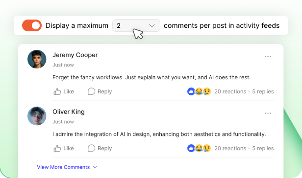
Comments Loading
Comment batches sized for a fast feed
Set how many more comments arrive with each load. Members pull deeper into a thread at their own pace, and the feed stays fast.
Build your community’s home on BuddyBoss
Build thriving communities, membership sites, and online learning platforms with BuddyBoss—the leading WordPress community platform.
Not every member should be able to post the same things. Access Controls decides who can create activity posts — so paying members, instructors, or your most active contributors get privileges others don’t. Set the rule once; administrators always keep full access.
WordPress role — what it does
Profile type — what it does
Membership — what it does
GamiPress — what it does
Gender — what it does
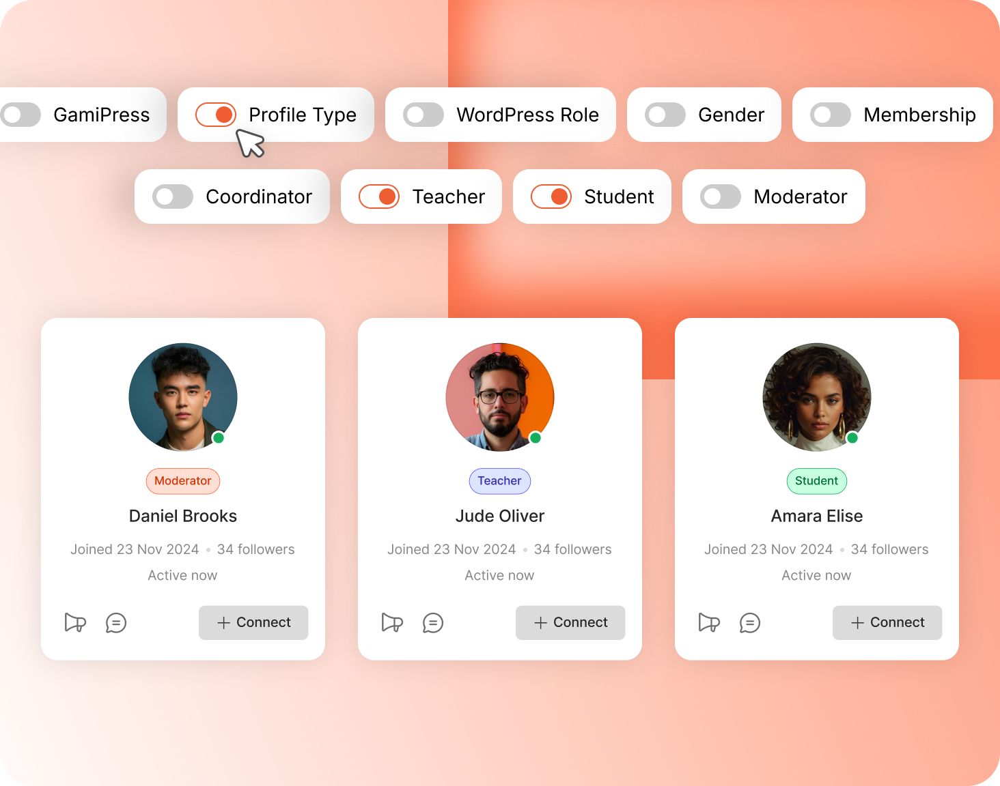
Posts Visibility
Show activity content to users that matters
Decide which activities are published to the activity feed, including BuddyBoss events, WordPress posts, and custom post types. Enable comments where supported.
Feature name — what it does
Feature name — what it does
Feature name — what it does
Feature name — what it does
Feature name — what it does
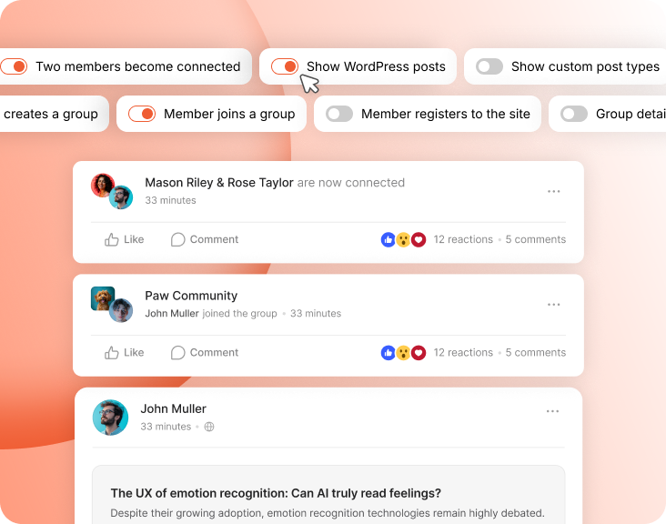
Trusted by 65,000+ customers and rated 4.8/5 based on 700+ customer reviews
Dwayne Moore
Great support people. Very attentive and helpful and quick to respond. We launched a new community site that includes an app. This was a major first-time undertaking for us, and we couldn’t have done it without the expertise and patience determination we found in the support team at Buddyboss. These guys and gals are good!
Nate Walker
I have used the BuddyBoss theme, platform, mobile app, done-for-you, and agency services for nearly two years. I am constantly impressed with the product and services. The leaders model excellence in software development and communication, feverously making groundbreaking improvements while keeping its community informed. The support services are first-rate, and the employees are dedicated and hardworking. I don’t know what I would have done without BuddyBoss during this pandemic. Their software and support team have made it possible to build a custom multisite and mobile app from scratch. I’m incredibly grateful for BuddyBoss and look forward to investing in its continued success.
Ryan Carlock
BuddyBoss is leading the way for Wordpress Users to enter into the App Space with their Native App plugin, Platform Plugin and plan to make it even easier in the future. It has personally revolutionized our own business, and as full stack developers we can attest to the uniqueness of what they’ve created. Bad reviews happen every day, but it’s not every day where you come across an opportunity to utilize something like BB App and Platform with freedom, and the support of those freedoms is why I’m sticking with them for the long haul! We have a vision to build the Internet of Apps, and BuddyBoss is helping make that a reality!
Kevin Castello
The BuddyBoss DFY Web process was very well laid out. It provided video explanations of each step and instructions for completing those steps. The questionnaires at the beginning of each stage help to set the expectations of the upcoming work. They also offer a full service agency approach if you would prefer to not be involved in the setup at all.
Kyler Boudreau
I’ve helped built a niche community on Drupal. Used Discourse, Mighty Networks and Circle. BuddyBoss blows all of them out of the water. ZERO contest. I’m an so excited to have moved my private community and training to this platform.
Circle One
Their line of products are consistent, elegant, and well thought out to build social platforms. Their support team is one of the best I’ve ever experienced and we owe our success to their entire team, especially their support staff who are organized, prompt, and reliable. Their support team is above the rest and is essential to the operations of our business and the future of our company’s growth. The new releases and the continual improvements the BB team does is excellent! They really know what their doing, consistently deliver, and we’re so thankful to have partnered with them two years ago.
Give your community a feed worth checking daily
Build thriving communities, membership sites, and online learning platforms with BuddyBoss—the leading WordPress community platform.
Rich profiles, a searchable member directory, and meaningful connections turn a simple user list into a thriving community—fully configurable to match your platform.
Run profile headers left-aligned or centered, and every profile in the network keeps the same shape. Cover images appear in the header only once you’ve enabled them.
Custom Profile Fields
Ask for exactly the info your community needs
Build field sets with dropdowns, dates, phone numbers, social networks, and more. Repeater fields let members add as many entries as their story needs, while every field can be required, assigned to specific profile types, and displayed during registration.
Social Fields
Thirteen networks, one field
Add the Social Networks field and profiles display a member’s presence as icons — Facebook to TikTok, Telegram to Twitch. Members add their links once; every profile shows where else they live online.
Profile Types
Members with their own rules
Every profile type gets its own fields, directory visibility, group permissions and even an auto-assigned WordPress role. Color-coded labels tell members who they’re talking to.
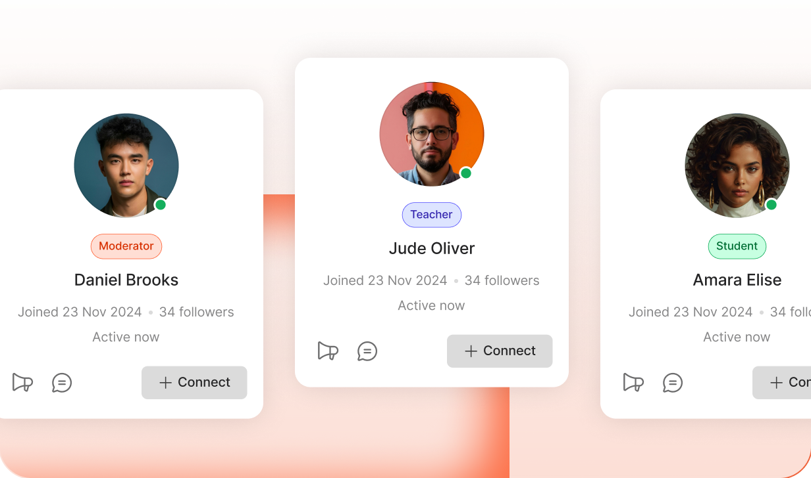
Profile Link
Profile URLs that stay readable
Members’ profile links read as /members/username or a unique identifier — your call. Both formats work, so switching the format never breaks a link members have already shared.
Display Name
Names your community uses
Choose how names appear across the whole network — First Name, First & Last, or Nickname. Turn off the Last Name field and it disappears everywhere; run Repair Community to update existing members.
Profile Navigation
A profile laid out the way you want it read
Drag to reorder the profile tabs — Timeline, Connections, Groups, Media, Forums, Documents — hide the ones you don’t need, and choose which loads first. Show the navigation down the side or across the top.
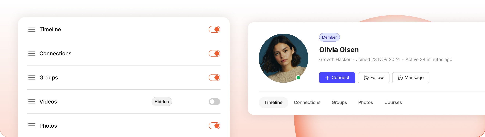
Build your community’s home on BuddyBoss
Build thriving communities, membership sites, and online learning platforms with BuddyBoss—the leading WordPress community platform.
Grid or list, sorted and filtered the way you decide
Choose the views, the default, and the five card elements every member shows — from online status to profile type. Members sort by activity, name or join date, and filter by type or connection.
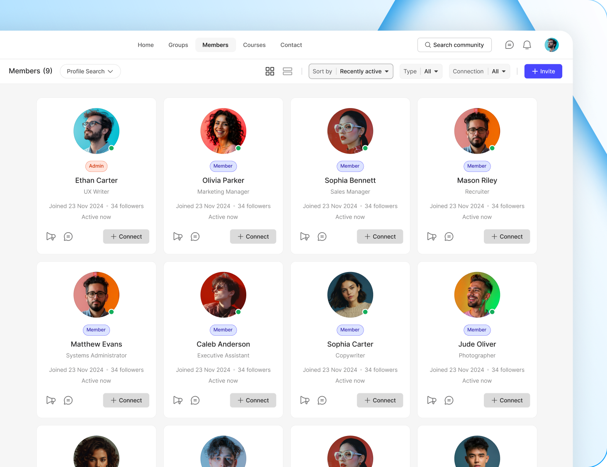
Directory Elements
Know someone before you click
The member directory keeps its own list of card elements, set separately from your profile headers. Turn on online status and last active so people see who’s around right now, or profile type and joined date so newcomers and long-timers are easy to tell apart.
Profile Search
Search by the fields you created
Advanced directory search built from your own profile fields — city, skills, industry, anything you’ve asked for. Members find each other by what actually matters in your community, not just by name.
Build your community’s home on BuddyBoss
Build thriving communities, membership sites, and online learning platforms with BuddyBoss—the leading WordPress community platform.
Members connect, follow, and build their own network
Members send connection requests, accept or decline them, and build a network of their own — with followers and following counts carried on every profile. Circle, Bettermode and Podia offer none of this.
Auto Follow
Connecting is also following
When two members connect, the follow happens on its own — no second step, no separate button. Their Followers and Following counts carry the relationship from that moment on.
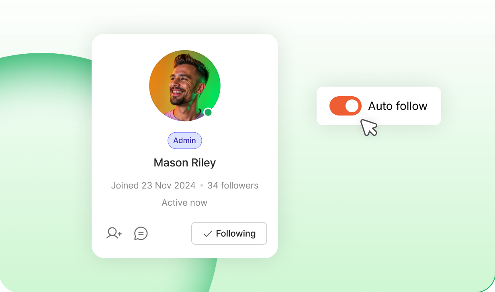
Profile Actions
Connect. Follow. Message.
Choose which actions appear across member cards and profile headers, and which one leads as the primary button — the others tuck in as secondary. One decision, consistent everywhere members meet.
Member Invites
Members grow the community for you
An Invite button right in the directory: name, email, a personal message — and a profile type assigned before the invitee even signs up. New members arrive with the right fields, permissions and groups from day one.
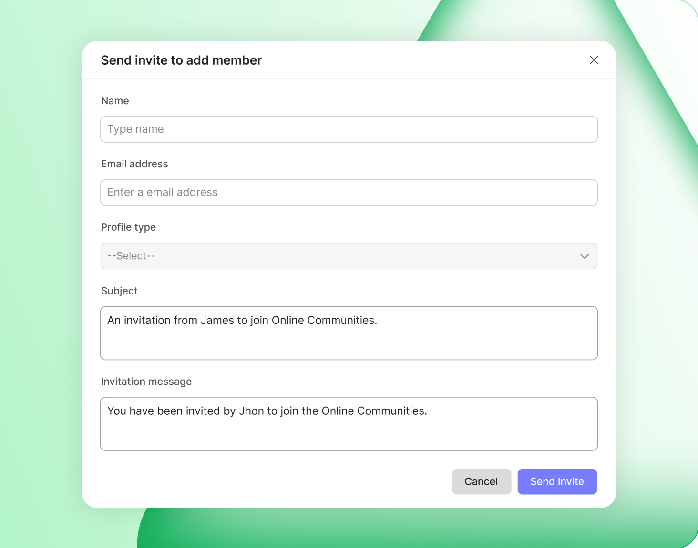
Build your community’s home on BuddyBoss
Build thriving communities, membership sites, and online learning platforms with BuddyBoss—the leading WordPress community platform.
Every profile field carries its own audience: Public, All Members, My Connections, or Only Me. Let members choose per field, or enforce a visibility they can’t override. No competitor hands members this control.
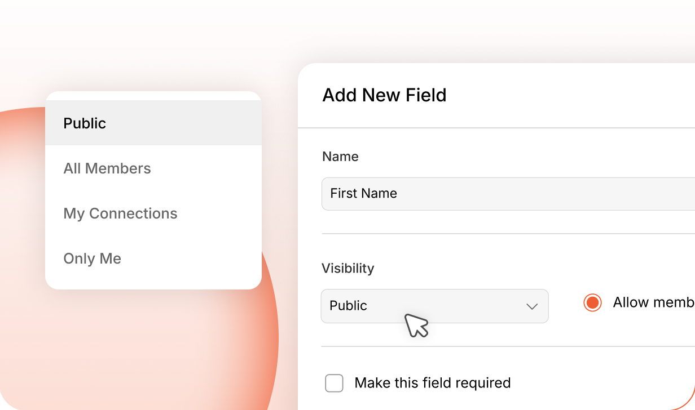
Account Deletion
Members with their own rules
Every profile type gets its own fields, directory visibility, group permissions and even an auto-assigned WordPress role. Color-coded labels tell members who they’re talking to.
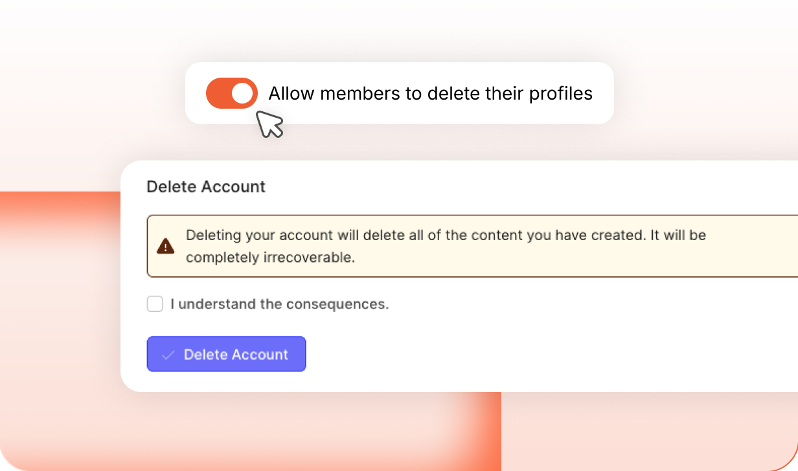
Connection Access
Who can ask to connect
Connection requests don’t have to flow in every direction. Set the rule per profile type — each type can send requests to all members, or only to the specific types you choose — so students can reach coaches without the whole network reaching them. Administrators aren’t bound by the restriction.
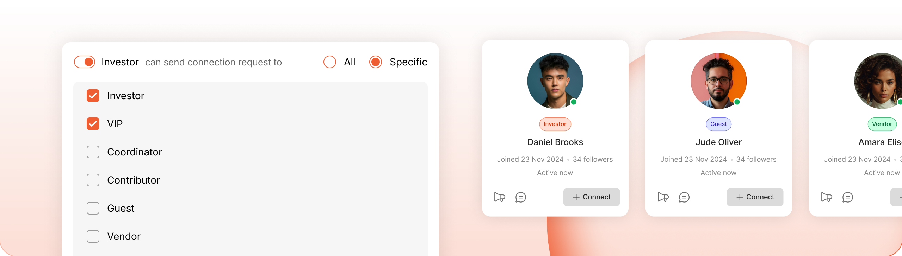
Connection-Gated Messaging
Require members to be connected before they can message each other — and decide, per profile type, who can send connection requests at all. Cold spam never reaches an inbox, and administrators stay exempt.
Group Type Approval
Pick the group types a profile type should join automatically, and members land in them the moment their account is activated — no request, no waiting on an organizer.
Group Create Permissions
Each profile type carries its own group rules. Let one type create any kind of group, hold another to a short list of group types, or take group creation away from a type entirely.
Trusted by 65,000+ customers and rated 4.8/5 based on 700+ customer reviews
Dwayne Moore
Great support people. Very attentive and helpful and quick to respond. We launched a new community site that includes an app. This was a major first-time undertaking for us, and we couldn’t have done it without the expertise and patience determination we found in the support team at Buddyboss. These guys and gals are good!
Nate Walker
I have used the BuddyBoss theme, platform, mobile app, done-for-you, and agency services for nearly two years. I am constantly impressed with the product and services. The leaders model excellence in software development and communication, feverously making groundbreaking improvements while keeping its community informed. The support services are first-rate, and the employees are dedicated and hardworking. I don’t know what I would have done without BuddyBoss during this pandemic. Their software and support team have made it possible to build a custom multisite and mobile app from scratch. I’m incredibly grateful for BuddyBoss and look forward to investing in its continued success.
Ryan Carlock
BuddyBoss is leading the way for Wordpress Users to enter into the App Space with their Native App plugin, Platform Plugin and plan to make it even easier in the future. It has personally revolutionized our own business, and as full stack developers we can attest to the uniqueness of what they’ve created. Bad reviews happen every day, but it’s not every day where you come across an opportunity to utilize something like BB App and Platform with freedom, and the support of those freedoms is why I’m sticking with them for the long haul! We have a vision to build the Internet of Apps, and BuddyBoss is helping make that a reality!
Kevin Castello
The BuddyBoss DFY Web process was very well laid out. It provided video explanations of each step and instructions for completing those steps. The questionnaires at the beginning of each stage help to set the expectations of the upcoming work. They also offer a full service agency approach if you would prefer to not be involved in the setup at all.
Kyler Boudreau
I’ve helped built a niche community on Drupal. Used Discourse, Mighty Networks and Circle. BuddyBoss blows all of them out of the water. ZERO contest. I’m an so excited to have moved my private community and training to this platform.
Circle One
Their line of products are consistent, elegant, and well thought out to build social platforms. Their support team is one of the best I’ve ever experienced and we owe our success to their entire team, especially their support staff who are organized, prompt, and reliable. Their support team is above the rest and is essential to the operations of our business and the future of our company’s growth. The new releases and the continual improvements the BB team does is excellent! They really know what their doing, consistently deliver, and we’re so thankful to have partnered with them two years ago.
Give your community a feed worth checking daily
Build thriving communities, membership sites, and online learning platforms with BuddyBoss—the leading WordPress community platform.